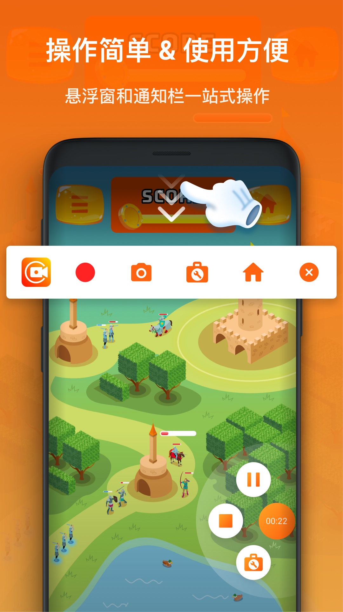

一周录屏一条链：把手机操作视频从录制到发布缩到三分之一的时间
以前录一个 Android 教程视频要折腾三条线来回切，现在 XRecorder 嵌进去后从手机端直接闭环八成工序——这篇讲具体怎么搭这条链，包括最容易断的音频权限和无线传输两个环节。
我每周要做一件事：把 Android 上某个功能的操作流程录成 3~5 分钟的教程视频，发到 YouTube 和 B 站，邮件通知订阅者。这个任务以前跑下来差不多要两个小时——手机录屏、电脑拷文件、剪映剪辑、加水印、双平台上传，中间还要在系统相册里从一堆 screenrecord_时间戳.mp4 里找对文件。
这篇不是介绍 XRecorder 是什么，而是说我怎么把它嵌进这条完整的流水线里，以及哪些环节插进去后就再也没动过。
旧流程：三条线来回切
先说旧流程的卡在哪：
- 录屏环节：用系统自带的录屏工具，每次开录有 3 秒倒计时，结束后去相册找文件——文件名全是时间戳，一次录三条的话要逐个打开确认哪段是哪段
- 传输环节：USB 线插电脑，开手机存储，从一个叫
Movies或ScreenRecord的目录里把文件拖到电脑剪辑文件夹——如果手机开了 USB 调试或者选了"仅充电"模式，还得手动改一下 - 后期环节：剪映导入素材，剪掉开头结尾的空白，加文字说明，然后开 PS 做一个水印 PNG，再合到视频上——这一步最烦，因为每次要调水印位置和透明度
最后还要开两个浏览器标签页分别上传，写完文案发邮件列表。整条链下来，手动复制粘贴的环节有四次，在不同 app 之间切换至少七八次。
新流程：XRecorder 插到哪个位置
我把 xrecorder官网 插在录屏和传输这两个环节之间——让手机端直接完成参数设置、画中画、裁剪、水印、重命名这些事，电脑只做最终的 BGM 和字幕。整条链变成了七步：
① 预设置（录一次，以后不用改）
② 悬浮窗一键开录
③ 录完直接在手机上裁掉空白 + 加标注
④ Pro 版水印直接烧进视频
⑤ 按规范重命名
⑥ 无线局域网传输到电脑（不用插 USB）
⑦ 剪映只做 BGM + 字幕 → 上传① 预设置：只做一次
第一次装完（安装包可以从xrecorder下载页拿）后我花了五分钟把参数固定好，以后每次开录都不用再动：
- 分辨率：1080p（我的手机是 2K 屏，日常录教程 1080p 足够；Pro 版能上 4K，但那个对芯片压力太大，录 10 分钟就掉帧）
- FPS：60（Pro 版 120FPS 文件体积翻倍，教程视频根本看不出区别）
- 音频源：内部音频 + 麦克风混合——这个是关键，教程里既要录到 app 声音也要录到我的解说
- 悬浮窗：设成常驻，保留「开始/暂停/画笔/截图」四个按钮，把不用的去掉

实操细节：最容易断链的两个环节
整条链大部分环节是顺的，只有两个地方容易出问题，这是我跑了六周总结出来的。
环节一：音频源和权限——录完才发现没声音就废了
这是最高频的失败点，我自己踩过三次坑。XRecorder 本身没 bug，问题出在 Android 系统和各家 ROM 的权限上：
第一种坑：Android 10 禁止内部音频。Google 在 Android 10 硬卡了这个权限，第三方 app 录不到内部音频——如果你的手机还在 Android 10，只能选「仅麦克风」模式，或者把手机扬声器开大点让麦克风顺带录到系统声。这个不是 XRecorder 的问题，是系统限制。
第二种坑：OEM ROM 的特殊开关。小米 MIUI / HyperOS、OPPO ColorOS、华为 HarmonyOS 这些厂商在系统设置里藏了一个单独的「录制内部音频」开关，XRecorder 的权限列表里看不到，要去系统设置里手动开：
- 小米：设置 → 应用设置 → 更多应用设置 → 录屏大师 → 录制内部音频
- OPPO：设置 → 应用管理 → 录屏大师 → 录制内部音频
- 华为：设置 → 隐私和安全 → 权限管理 → 录屏大师 → 内部音频录制
搜不到的话直接在系统设置里搜「内部音频录制」这个关键词，或者去xrecorder文档翻完整的权限排查表——能直接跳到对应的开关页面。
第三种坑：选了「静音」模式忘了改回来。XRecorder 的音频源设置里有个「静音」选项——上次我录屏前调试了一下，忘了切回「混合音频」，录完发现只有画面没有声音。这种低级错误犯过一次之后，我现在每次开录前都先录 5 秒测试片段，听一下有没有声音再正式录。
环节二：无线局域网传输——省了 USB 插拔但有门槛
这是让整个流程质变的一步。以前每次录完要摸 USB 线、开文件传输模式、找录屏目录——现在我用 ES 文件浏览器开一个 FTP 共享，手机和电脑在同一个 Wi-Fi 下，电脑直接输入手机 IP 就能访问录屏目录，文件直接拖过去。
但这步有三个前提：
- 手机 IP 要固定：路由器里给手机设一个静态 IP，不然每次重连 Wi-Fi IP 变了，电脑输旧地址就进不去
- 电脑防火墙要放行 FTP 端口：Windows Defender 默认会拦，第一次会弹提示，点允许就行
- 传输过程中别关 FTP app：ES 文件浏览器如果被杀进程了，传输就断了——我的做法是把它加进手机的后台白名单
我试过的替代方案有：百度云（上传慢，还要电脑端下载）、微信文件传输助手（大视频会被压缩画质）、数据线（最稳但回到旧流程了）。FTP 是目前最平衡的——不用装额外软件，速度取决于本地 Wi-Fi，没有压缩。
录完后的收尾：手机端先处理，电脑端减负
录完一段之后，我在手机上直接做三件事，不让文件带着瑕疵传到电脑：
第一，裁剪空白。每次开录前我会等两秒，录完后停两秒——XRecorder 内置的剪辑功能可以精确剪掉前后各两秒，不用导入剪映再拖时间线。
第二，加标注。用悬浮窗的画笔按钮，在关键步骤的操作位置画个圈或者写几个字——教程视频里这个很重要，观众一眼能看到重点在哪。内置画笔有高亮、箭头、文字，够用了。
第三，重命名。这步是以前最容易被忽略但后期最痛苦的事——默认名是时间戳，一次录三条的话根本分不清哪段是哪段。我给每个文件起有意义的名字：教程-录屏大师设置_20261017.mp4，以后不管在手机上还是电脑上找素材，一眼就能定位。Pro 版支持批量重命名，可以在视频 Tab 里一次性加前缀或后缀。
效果与边界：这套链什么时候划算
先说数据化的效果：
- 少了两次手动复制（USB 插电脑 → 找目录 → 拖文件；开 PS 做水印 → 合到视频）
- 不用在相册里逐个找文件（重命名 + 指定目录，一次录三条也不会混）
- 电脑端剪辑时间减半——剪映只做 BGM 和字幕，其他事手机端搞定
- 整个流程从两小时缩到 40 分钟左右
再说说边界——什么情况下这套链不划算：
- 4K / 120FPS 专业录屏：Pro 版能录但对手机性能消耗太大，文件体积是 1080p 的 3~4 倍，后期必须走完整的电脑端剪辑链（Premiere 或 DaVinci Resolve），手机端处理不动
- 纯游戏直播录屏：如果是要带实时解说推流到 YouTube，Pro 版的直连功能确实省了每次手动复制推流密钥的麻烦——但直播本身就是另一条独立链路，和这条"教程录制"流水线不搭
- 需要复杂后期的内容：比如多轨道合成、特效、调色——XRecorder 的内置剪辑只能做裁剪和简单标注，这些还是得靠电脑端的专业软件
还有一个隐性成本：Pro 订阅。我用的是年订阅（Google Play 约 $29.99/年），说实话免费版已经够用——1080p@60fps、内部+麦克风混合、无水印这些核心功能免费版都有。我买 Pro 主要是因为自定义水印和 120FPS，如果你不需要这两个，免费版完全能搭出这条链，只是少了水印那步而已。
一句话总结
这条链的核心思路是：能在手机端闭环的事不拖到电脑端。XRecorder 不是万能的，它解决的是"录完一段干净素材"这个最基础也最容易出问题的环节——参数一次设好，音频权限每次录前 5 秒测试，传输走 FTP，这三个点守好，整条流程跑起来就没什么断点了。如果你的工作流里也有类似"手机录屏 → 后期处理"的环节，可以试试把它插进去。
我把这套流程里用到的软件版本和参数都同步整理好了——在 GitHub 上维护主版本，Gitee 和 GitCode 是备份镜像，国内用户访问 Gitee 通常更顺畅。